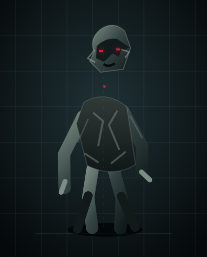

Instalação subterrânea de pesquisa da Dominium. O terminal reúne setores, equipe e registros visuais recuperados; dados ainda não confirmados permanecem lacrados.
ANT-DOOM-00PESQUISA BIOLÓGICA // HADES
EQUIPE CIENTÍFICA // HADES
ANÁLISE BIOLÓGICA // TERMINAL L-04
ESTAÇÃO DE PESQUISA BIOLÓGICA
INTERFACE VISUAL // DADOS INCOMPLETOS
LEITURA VISUAL // D-37SIMULAÇÃO GRÁFICA
CEPA IDENTIFICADA
DOOM
CATEGORIA
06
LOCAL
HADES // L-04
Os rótulos D-37, DOOM e Categoria 6 aparecem nos registros visuais. Procedimentos, resultados e origem permanecem fora deste terminal até a confirmação do autor.
ÍNDICE DE DIVISÕES // IDENTIFICAÇÃO VISUAL
DOM // R&DDIVISÃO DE PESQUISAREGISTRO VISUAL
Identificada nos arquivos do laboratório Hades, nível 4. A estrutura completa dos setores ainda não foi recuperada.
DOM // SECSEGURANÇAREGISTRO VISUAL
A equipe especial de Ulisses Heller está associada à plataforma Leviathan e ao complexo Hades.
DOM // ENGENGENHARIAREGISTRO VISUAL
A engenharia aparece como uma divisão da Dominium. O mapa interno e as atribuições específicas aguardam documentação.
EQUIPE CIENTÍFICA // HADES
ARQUIVO DE PESQUISA // NÍVEL 04
AMOSTRA D-37
CEPA IDENTIFICADA
DOOM
CATEGORIA
06
LOCAL
HADES // L-04
CONSULTAR NOTA DE INTEGRIDADE
Os rótulos D-37, DOOM e Categoria 6 aparecem nos registros visuais. Procedimentos, resultados e origem permanecem fora deste terminal até a confirmação do autor.
CRIOGENIA // CUSTÓDIA DE AMOSTRAS
CRYO // D-37
CÂMARA DE CONTENÇÃO
LEITURA PARCIAL
D-37 // ANT-DOOM-00
TERMINAL DE ENSAIOS // CONTEÚDO RESTRITO
ANT-DOOM-00AGUARDANDO RELATÓRIOS
REGISTRO DE EXPERIMENTOS
Esta interface está pronta para receber os testes em sequência. Nenhum método ou resultado foi criado para preencher as lacunas.
ABRIR ENVELOPE DE DADOS
O envelope contém apenas uma marca de acesso. O relatório ainda não foi anexado.
MORFOLOGIA // SALA DE OBSERVAÇÃO
ARQUIVO DE INFECTADOS
Estudos visuais provisórios. Selecione um registro para comparar as propostas; a ordem não representa uma progressão confirmada.
MORPH // 01CONCEITO // NÃO CANÔNICO

Postura inclinada, silhueta estreita e um braço mantido à frente do corpo.
FICHA MORFOLÓGICA // ESTUDO VISUAL
ERRANTE
FORMA HUMANOIDE // ESTUDO
Uma proposta para a forma humanoide de referência. O desenho explora uma postura irregular e um contorno ainda reconhecível, sem definir origem ou comportamento como cânone.
APARÊNCIA
Postura inclinada, silhueta estreita e um braço mantido à frente do corpo.
OBSERVAÇÃO
A gravação não confirma movimento, reação ou sequência de transformação.
TERMINAL DE LEITURA VISUALCAM // 04
QUADRO DE PESSOAL // REGISTROS VISUAIS
EQUIPE DO HADES
As imagens identificam a equipe de segurança do Esquadrão Heller e integrantes da divisão de pesquisa. Abra os registros completos na galeria de pessoal.
SEGURANÇA // ESQUADRÃO HELLERDOM-SEC // LEVIATHAN
DOM-SEC // 01
Ulisses Heller
Líder do Esquadrão Heller.
DOM-SEC // 02
Ulisses Heller + Clark Green
Registro da equipe na plataforma Leviathan.
DOM-SEC // 03
Heller + Green
Registro interno dos integrantes antes da missão.
DOM-SEC // 04
Jéssica Kuroda
Pilota e operadora da equipe especial.
DOM-SEC // 05
Martin O’Gray
Analista tático e oficial de inteligência.
DOM-SEC // 06
Dra. Diana Hayes
Médica de combate vinculada à equipe especial.
DOM-SEC // 07
Leah Redbird
Atiradora de precisão e especialista em reconhecimento.
DOM-SEC // 08
Bruno
Especialista em explosivos e demolições controladas.
DOM-SEC // 09
Adrian Vega
Especialista em tecnologia e guerra eletrônica.
DOM-SEC // 10
Clark Green
Segundo em comando do esquadrão.
DIVISÃO DE PESQUISA // HADESDOM-R&D // L-04
DOM-R&D // 01
Dra. Sophie Grey
Chefia de pesquisa // Biomedicina.
DTRETRATO NÃO RECUPERADO
DOM-R&D // 02
Daniel Turner
Cientista de pesquisa // credencial funcional.
ABRIR FRAGMENTO RESTRITO
Uma nota cruzada identifica Turner como agente infiltrado, operando sob identidade falsa dentro da equipe. O restante da missão permanece lacrado.
DOM-R&D // 03
Erin Foster
Diretora da divisão de pesquisa.
DOM-R&D // 04
Laurence Maverick
Cientista sênior ligado ao Projeto DOOM.
DOM-R&D // 05
Equipe de pesquisa
Registro coletivo da equipe científica no laboratório Hades.
ARQUIVO PESSOAL // LAURENCE MAVERICK
DIÁRIO FRAGMENTADO
As páginas do diário serão encontradas em diferentes áreas do complexo. Esta central mostra somente o índice de recuperação.
PAGE // 01NÃO INDEXADA
Nenhum trecho recuperado neste terminal.
PAGE // 02NÃO INDEXADA
Nenhum trecho recuperado neste terminal.
PAGE // 03NÃO INDEXADA
Nenhum trecho recuperado neste terminal.
HADES // ARQUIVO BIOLÓGICO ANTÁRTICO
PROJETO DOOM
Uma instalação de pesquisa clandestina reconstruída a partir de arquivos fragmentados. Explore os registros, compare relatos e abra somente o que a história já confirmou.
Selecione um setor. Registros confirmados, inferências e lacunas aparecem separados no terminal.
ORGANIZAÇÃO // REGISTRO RECUPERADO
Duas divisões. Um relato incompleto.
A estrutura abaixo é apresentada como aparece no diário de Laurence; não como uma descrição institucional independente.
DIVISION // 01
HADES
Laurence chama Hades de foco principal de seu trabalho. Ele relata uma equipe exclusiva, escolhida por ele e Erin, dedicada ao maior projeto da instalação em um nível inferior.
FONTE: diário de Laurence, 27/12/1993. Planta, hierarquia e integrantes ainda não confirmados.DIVISION // 02
LEVIATHAN
No relato de Laurence, Leviathan trabalhava com vacinas, tratamentos e pesquisa ambiental. Ele menospreza essa divisão, então a avaliação de rivalidade é parcial.
Atribuição não verificada por outra fonte. O nome da divisão é conhecido; seus arquivos ainda não foram recuperados.
CRONOLOGIA // PROGRAMA DOMINUS
A fundação antes do gelo
Abra cada registro para acompanhar a sequência que os documentos permitem confirmar.
Descoberta de DOOM
Laurence registra a descoberta de um patógeno microscópico desconhecido, preservado no gelo. Ele afirma que não era bactéria, vírus ou parasita; a equipe lhe deu o nome DOOM.
FONTE // DOCUMENTO FORNECIDO PELO AUTOR
INTERFACE DE ANÁLISE // SIMULAÇÃO NARRATIVA
O que a equipe encontrou?
Leia o trecho recuperado e escolha a classificação que corresponde ao registro — não ao conhecimento científico do visitante.
REGISTRO // CATEGORIA AINDA NÃO RECONHECIDA
Aguardando classificação do visitante...
INTERAÇÃO FICCIONAL. Não contém procedimento, instrução laboratorial ou informação prática sobre patógenos reais.
ARQUIVO DE MORFOLOGIA // DADOS AINDA NÃO RECUPERADOS
Estágios de transformação
Esta estrutura prepara o espaço visual para as formas dos infectados, sem definir aparência, sintomas, duração ou mecanismo antes da escrita do cânone.
STAGE // 00
Exposição
Cronologia, sinais e condições desconhecidos. Registro aguardando a história.
AGUARDANDO CÂNONESTAGE // 01
Transição
Forma visual e progressão não definidas nos documentos recebidos.
AGUARDANDO CÂNONESTAGE // 02+
Evoluções
Espécies, variações e nomes serão acrescentados após o desenvolvimento das criaturas.
AGUARDANDO CÂNONE
SÉRIE ESPECIAL // ARQUIVOS LACRADOS
Experimentos Rei e Rainha
Os dossiês estão preparados como espaços de desenvolvimento. Os documentos atuais não explicam o que esses nomes significam, nem confirmam aparência ou origem.
DOSSIÊ LACRADO // 01
Espécime Rei
Arquivo reservado para a futura concepção da criatura e de seu papel na história.
Sem dados legíveis.
DOSSIÊ LACRADO // 02
Espécime Rainha
Arquivo reservado para a futura concepção da criatura e de seu papel na história.
Sem dados legíveis.
ARQUIVO DE PESSOAL // LEVIATHAN E HADES
Pessoas registradas
Os novos arquivos visuais identificam a equipe de segurança de Ulisses Heller e integrantes da divisão de pesquisa. As funções seguem o que está impresso nos próprios registros.
Esquadrão Heller // Segurança
DOM-SEC // LEVIATHAN
REGISTRO DE COMANDO
Ulisses Heller
Líder do Esquadrão Heller.
REGISTRO DE COMANDO
Ulisses Heller + Clark Green
Registro da equipe na plataforma Leviathan.
REGISTRO DE COMANDO
Preparação do esquadrão
Registro interno dos integrantes antes da missão.
REGISTRO DE COMANDO
Jéssica Kuroda
Pilota e operadora da equipe especial.
REGISTRO DE COMANDO
Martin O’Gray
Analista tático e oficial de inteligência.
REGISTRO DE COMANDO
Dra. Diana Hayes
Médica de combate vinculada à equipe especial.
REGISTRO DE COMANDO
Leah Redbird
Atiradora de precisão e especialista em reconhecimento.
REGISTRO DE COMANDO
Bruno
Especialista em explosivos e demolições controladas.
REGISTRO DE COMANDO
Adrian Vega
Especialista em tecnologia e guerra eletrônica.
REGISTRO DE COMANDO
Ulisses Heller
Líder do Esquadrão Heller.
REGISTRO DE COMANDO
Clark Green
Segundo em comando do Esquadrão Heller.
Divisão de pesquisa // Hades
DOM-R&D // L-04
REGISTRO DE PESQUISA
Erin Foster
Diretora da divisão de pesquisa.
REGISTRO DE PESQUISA
Laurence Maverick
Cientista sênior ligado ao Projeto DOOM.
REGISTRO DE PESQUISA
Equipe de pesquisa
Registro coletivo da equipe científica no laboratório Hades.
PRÓXIMA FASE
Os primeiros registros visuais de Leviathan, Hades e suas equipes foram indexados. A próxima etapa é desenvolver as divisões e os experimentos com os materiais que você definir.
.jpeg)
.jpeg)
.jpeg)
.jpeg)
.jpeg)
.jpeg)
.jpeg)
.jpeg)
.jpeg)
.jpeg)
.jpeg)

.jpeg)
.jpeg)